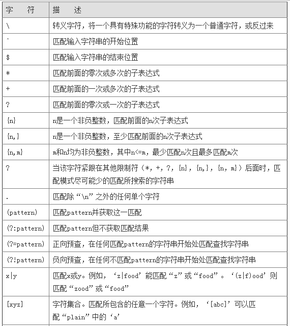
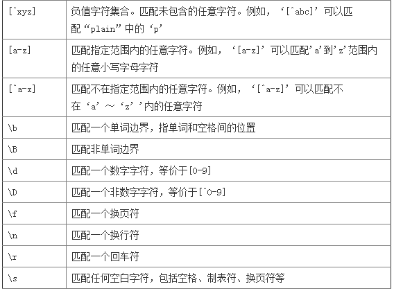
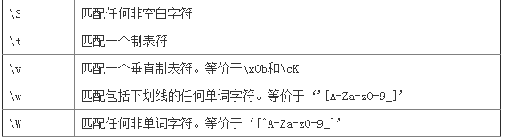

正则表达式的本质是使用一系列特殊字符模式，来表示某一类字符串。正则表达式无疑是处理文本最有力的工具，而.NET提供的Regex类实现了验证正则表达式的方法。Regex 类表示不可变（只读）的正则表达式。它还包含各种静态方法，允许在不显式创建其他类的实例的情况下使用其他正则表达式类。



由于在正则表达式中“ \ ”、“ ? ”、“ * ”、“ ^ ”、“ $ ”、“ + ”、“（”、“）”、“ | ”、“ { ”、“ [ ”等字符已经具有一定特殊意义，如果需要用它们的原始意义，则应该对它进行转义，例如 希 望在字符串中至少有一个“ \ ”，那么正则表达式应该这么写： \\+ 。
使用静态Match方法，可以得到源中第一个匹配模式的连续子串。静态的Match方法有2个重载，分别是
Regex.Match(string input, string pattern);
Regex.Match(string input, string pattern, RegexOptions options);
第一种重载的参数表示：输入、模式.这个方法的重载形式同静态的Match方法，返回一个MatchCollection，表示输入中，匹配模式的匹配的集合。
此方法返回一个bool，重载形式同静态的Matches，若输入中匹配模式，返回true，否则返回false。可以理解为：IsMatch方法，返回Matches方法返回的集合是否为空。
//例如我想把如下格式记录中的NAME值修改为WANG
string line = "ADDR=1234;NAME=ZHANG;PHONE=6789";
Regex reg = new Regex("NAME=(.+);");
string modified = reg.Replace(line, "NAME=WANG;");
//修改后的字符串为 ADDR=1234;NAME=WANG;PHONE=6789
Regex reg = new Regex("NAME=(.+);"); //例如我想提取line中的NAME值 Match match = reg.Match(line); string value = match.Groups[1].Value; Console.WriteLine("value的值为：{0}", value);
//文本中含有"speed=30.3mph",需要提取该速度值，但是速度的单位可能是公制也可能是英制，mph,km/h,m/s都有可能；另外前后可能有空格。
string line = "lane=1;speed=30.3mph;acceleration=2.5mph/s";
Regex reg = new Regex(@"speed\s*=\s*([\d\.]+)\s*(mph|km/h|m/s)*");
Match match = reg.Match(line);
//那么在返回的结果中match.Groups[1].Value将含有数值，而match.Groups[2].Value将含有单位。
var 值 = match.Groups[1].Value;//此处方便演示，在实际开发中请勿使用中文命名变量
var 单位 = match.Groups[2].Value;
Console.WriteLine("speed的值为：{0} speed的单位是:{1}", 值,单位);
//speed的值为30.3 speed的单位是：mph
//就可以获得经度、纬度值，而以前需要几十行代码。
Regex reg = new Regex(@"^\$GPRMC,[\d\.]*,[A|V],(-?[0-9]*\.?[0-9]+),([NS]*),(-?[0-9]*\.?[0-9]+),([EW]*),.*");
string pattern1 = @"(?is)(?<=\[)(.*)(?=\])";
string result1 = new Regex(pattern1).Match("sadff[xxx]sdfdsf").Value;
//xxx
string pattern2 = @"(?is)(?<=\()(.*)(?=\))";
string result2 = new Regex(pattern2).Match("sad(f)dsf").Value;
//f
string pattern3 = @"(?is)(?<=\{)(.*)(?=\})";
string result3 = new Regex(pattern3).Match("sadff[{xxx]sdfd}sf").Value;
//xxx]sdfd
该名称空间包括8个类，1个枚举，1个委托。他们分别是：
Capture: 包含一次匹配的结果；
CaptureCollection: Capture的序列；
Group: 一次组记录的结果，由Capture继承而来；
GroupCollection：表示捕获组的集合
Match: 一次表达式的匹配结果，由Group继承而来；
MatchCollection: Match的一个序列；
MatchEvaluator: 执行替换操作时使用的委托；
RegexCompilationInfo：提供编译器用于将正则表达式编译为独立程序集的信息
RegexOptions 提供用于设置正则表达式的枚举值
Regex类中还包含一些静态的方法：
Escape: 对字符串中的regex中的转义符进行转义；
IsMatch: 如果表达式在字符串中匹配，该方法返回一个布尔值；
Match: 返回Match的实例；
Matches: 返回一系列的Match的方法；
Replace: 用替换字符串替换匹配的表达式；
Split: 返回一系列由表达式决定的字符串；
Unescape:不对字符串中的转义字符转义。
//数字
Regex reg = new Regex(@"^[0-9]*$");
//n位的数字
Regex reg = new Regex(@"^\d{n}$");
//至少n位的数字
Regex reg = new Regex(@"^\d{n,}$");
//m-n位的数字
Regex reg = new Regex(@"^\d{m,n}$");
//零和非零开头的数字
Regex reg = new Regex(@"^(0|[1-9][0-9]*)$");
//非零开头的最多带两位小数的数字
Regex reg = new Regex(@"^([1-9][0-9]*)+(.[0-9]{1,2})?$");
//带1-2位小数的正数或负数
Regex reg = new Regex(@"^(\-)?\d+(\.\d{1,2})?$");
//正数、负数、和小数
Regex reg = new Regex(@"^(\-|\+)?\d+(\.\d+)?$");
//有两位小数的正实数
Regex reg = new Regex(@"^[0-9]+(.[0-9]{2})?$");
//有1~3位小数的正实数
Regex reg = new Regex(@"^[0-9]+(.[0-9]{1,3})?$");
//非零的正整数
Regex reg = new Regex(@"^[1-9]\d*$ 或 ^([1-9][0-9]*){1,3}$ 或 ^\+?[1-9][0-9]*$");
//非零的负整数
Regex reg = new Regex(@"^\-[1-9][]0-9″*$ 或 ^-[1-9]\d*$");
//非负整数
Regex reg = new Regex(@"^\d+$ 或 ^[1-9]\d*|0$");
//非正整数
Regex reg = new Regex(@"^-[1-9]\d*|0$ 或 ^((-\d+)|(0+))$");
//非负浮点数
Regex reg = new Regex(@"^\d+(\.\d+)?$ 或 ^[1-9]\d*\.\d*|0\.\d*[1-9]\d*|0?\.0+|0$");
//非正浮点数
Regex reg = new Regex(@"^((-\d+(\.\d+)?)|(0+(\.0+)?))$ 或 ^(-([1-9]\d*\.\d*|0\.\d*[1-9]\d*))|0?\.0+|0$");
//正浮点数
Regex reg = new Regex(@"^[1-9]\d*\.\d*|0\.\d*[1-9]\d*$ 或 ^(([0-9]+\.[0-9]*[1-9][0-9]*)|([0-9]*[1-9][0-9]*\.[0-9]+)|([0-9]*[1-9][0-9]*))$");
//负浮点数
Regex reg = new Regex(@"^-([1-9]\d*\.\d*|0\.\d*[1-9]\d*)$ 或 ^(-(([0-9]+\.[0-9]*[1-9][0-9]*)|([0-9]*[1-9][0-9]*\.[0-9]+)|([0-9]*[1-9][0-9]*)))$");
//浮点数
Regex reg = new Regex(@"^(-?\d+)(\.\d+)?$ 或 ^-?([1-9]\d*\.\d*|0\.\d*[1-9]\d*|0?\.0+|0)$");
//汉字
Regex reg = new Regex(@"^[\u4e00-\u9fa5]{0,}$");
//英文和数字
Regex reg = new Regex(@"^[A-Za-z0-9]+$ 或 ^[A-Za-z0-9]{4,40}$");
//长度为3-20的所有字符
Regex reg = new Regex(@"^.{3,20}$");
//由26个英文字母组成的字符串
Regex reg = new Regex(@"^[A-Za-z]+$");
//由26个大写英文字母组成的字符串
Regex reg = new Regex(@"^[A-Z]+$");
//由26个小写英文字母组成的字符串
Regex reg = new Regex(@"^[a-z]+$");
//由数字和26个英文字母组成的字符串
Regex reg = new Regex(@"^[A-Za-z0-9]+$");
//由数字、26个英文字母或者下划线组成的字符串
Regex reg = new Regex(@"^\w+$ 或 ^\w{3,20}$");
//中文、英文、数字包括下划线
Regex reg = new Regex(@"^[\u4E00-\u9FA5A-Za-z0-9_]+$");
//中文、英文、数字但不包括下划线等符号
Regex reg = new Regex(@"^[\u4E00-\u9FA5A-Za-z0-9]+$ 或 ^[\u4E00-\u9FA5A-Za-z0-9]{2,20}$");
//可以输入含有^%&’,;=?$\”等字符
Regex reg = new Regex(@"[^%&’,;=?$\x22]+");
//禁止输入含有~的字符
Regex reg = new Regex(@"[^~\x22]+");
㈢特殊需求表达式
//Email地址
Regex reg = new Regex(@"^\w+([-+.]\w+)*@\w+([-.]\w+)*\.\w+([-.]\w+)*$");
//域名
Regex reg = new Regex(@"[a-zA-Z0-9][-a-zA-Z0-9]{0,62}(/.[a-zA-Z0-9][-a-zA-Z0-9]{0,62})+/.?");
//InternetURL
Regex reg = new Regex(@"[a-zA-z]+://[^\s]* 或 ^http://([\w-]+\.)+[\w-]+(/[\w-./?%&=]*)?$");
//手机号码
Regex reg = new Regex(@"^(13[0-9]|14[5|7]|15[0|1|2|3|5|6|7|8|9]|18[0|1|2|3|5|6|7|8|9])\d{8}$");
//电话号码(“XXX-XXXXXXX”、”XXXX-XXXXXXXX”、”XXX-XXXXXXX”、”XXX-XXXXXXXX”、”XXXXXXX”和”XXXXXXXX)
Regex reg = new Regex(@"^($$\d{3,4}-)|\d{3.4}-)?\d{7,8}$");
//国内电话号码(0511-4405222、021-87888822)
Regex reg = new Regex(@"\d{3}-\d{8}|\d{4}-\d{7}");
//身份证号(15位、18位数字)
Regex reg = new Regex(@"^\d{15}|\d{18}$");
//短身份证号码(数字、字母x结尾)
Regex reg = new Regex(@"^([0-9]){7,18}(x|X)?$ 或 ^\d{8,18}|[0-9x]{8,18}|[0-9X]{8,18}?$");
//帐号是否合法(字母开头，允许5-16字节，允许字母数字下划线)
Regex reg = new Regex(@"^[a-zA-Z][a-zA-Z0-9_]{4,15}$");
//密码(以字母开头，长度在6~18之间，只能包含字母、数字和下划线)
Regex reg = new Regex(@"^[a-zA-Z]\w{5,17}$");
//强密码(必须包含大小写字母和数字的组合，不能使用特殊字符，长度在8-10之间)
Regex reg = new Regex(@"^(?=.*\d)(?=.*[a-z])(?=.*[A-Z]).{8,10}$");
//日期格式
Regex reg = new Regex(@"^\d{4}-\d{1,2}-\d{1,2}");
//一年的12个月(01～09和1～12)
Regex reg = new Regex(@"^(0?[1-9]|1[0-2])$");
//一个月的31天(01～09和1～31)
Regex reg = new Regex(@"^((0?[1-9])|((1|2)[0-9])|30|31)$");
//钱的输入格式：
//有四种钱的表示形式我们可以接受:”10000.00″ 和 “10,000.00”, 和没有 “分” 的 “10000” 和 “10,000”
Regex reg = new Regex(@"^[1-9][0-9]*$");
//这表示任意一个不以0开头的数字，但是，这也意味着一个字符”0″不通过，所以我们采用下面的形式
Regex reg = new Regex(@"^(0|[1-9][0-9]*)$");
//一个0或者一个不以0开头的数字.我们还可以允许开头有一个负号
Regex reg = new Regex(@"^(0|-?[1-9][0-9]*)$");
//这表示一个0或者一个可能为负的开头不为0的数字.让用户以0开头好了.把负号的也去掉，因为钱总不能是负的吧.下面我们要加的是说明可能的小数部分
Regex reg = new Regex(@"^[0-9]+(.[0-9]+)?$");
//必须说明的是，小数点后面至少应该有1位数，所以”10.”是不通过的，但是 “10” 和 “10.2” 是通过的
Regex reg = new Regex(@"^[0-9]+(.[0-9]{2})?$");
//这样我们规定小数点后面必须有两位，如果你认为太苛刻了，可以这样
Regex reg = new Regex(@"^[0-9]+(.[0-9]{1,2})?$");
//这样就允许用户只写一位小数。下面我们该考虑数字中的逗号了，我们可以这样
Regex reg = new Regex(@"^[0-9]{1,3}(,[0-9]{3})*(.[0-9]{1,2})?$");
//1到3个数字，后面跟着任意个 逗号+3个数字，逗号成为可选，而不是必须
Regex reg = new Regex(@"^([0-9]+|[0-9]{1,3}(,[0-9]{3})*)(.[0-9]{1,2})?$");
//备注：这就是最终结果了，别忘了”+”可以用”*”替代。如果你觉得空字符串也可以接受的话(奇怪，为什么?)最后，别忘了在用函数时去掉去掉那个反斜杠，一般的错误都在这里
//xml文件
Regex reg = new Regex(@"^([a-zA-Z]+-?)+[a-zA-Z0-9]+\\.[x|X][m|M][l|L]$");
//中文字符的正则表达式
Regex reg = new Regex(@"[\u4e00-\u9fa5]");
//双字节字符
Regex reg = new Regex(@"[^\x00-\xff] (包括汉字在内，可以用来计算字符串的长度(一个双字节字符长度计2，ASCII字符计1))");
//空白行的正则表达式，可用来删除空白行
Regex reg = new Regex(@"\n\s*\r");
//HTML标记的正则表达式
Regex reg = new Regex(@"<(\S*?)[^>]*>.*?|<.*? />");// (网上流传的版本太糟糕，上面这个也仅仅能部分，对于复杂的嵌套标记依旧无能为力)
//首尾空白字符的正则表达式
Regex reg = new Regex(@"^\s*|\s*$或(^\s*)|(\s*$)");// (可以用来删除行首行尾的空白字符(包括空格、制表符、换页符等等)，非常有用的表达式)
//腾讯QQ号
Regex reg = new Regex(@"[1-9][0-9]{4,}"); //(腾讯QQ号从10000开始)
//中国邮政编码
Regex reg = new Regex(@"[1-9]\d{5}(?!\d)");// (中国邮政编码为6位数字)
//IP地址
Regex reg = new Regex(@"\d+\.\d+\.\d+\.\d+");// (提取IP地址时有用)
//IP地址
Regex reg = new Regex(@"((?:(?:25[0-5]|2[0-4]\\d|[01]?\\d?\\d)\\.){3}(?:25[0-5]|2[0-4]\\d|[01]?\\d?\\d))");
//Email地址
Regex reg = new Regex(@"^\w+([-+.]\w+)*@\w+([-.]\w+)*\.\w+([-.]\w+)*$");
//域名
Regex reg = new Regex(@"[a-zA-Z0-9][-a-zA-Z0-9]{0,62}(/.[a-zA-Z0-9][-a-zA-Z0-9]{0,62})+/.?");
//InternetURL
Regex reg = new Regex(@"[a-zA-z]+://[^\s]* 或 ^http://([\w-]+\.)+[\w-]+(/[\w-./?%&=]*)?$");
//手机号码
Regex reg = new Regex(@"^(13[0-9]|14[5|7]|15[0|1|2|3|5|6|7|8|9]|18[0|1|2|3|5|6|7|8|9])\d{8}$");
//电话号码(“XXX-XXXXXXX”、”XXXX-XXXXXXXX”、”XXX-XXXXXXX”、”XXX-XXXXXXXX”、”XXXXXXX”和”XXXXXXXX)
Regex reg = new Regex(@"^($$\d{3,4}-)|\d{3.4}-)?\d{7,8}$");
//国内电话号码(0511-4405222、021-87888822)
Regex reg = new Regex(@"\d{3}-\d{8}|\d{4}-\d{7}");
//身份证号(15位、18位数字)
Regex reg = new Regex(@"^\d{15}|\d{18}$");
//短身份证号码(数字、字母x结尾)
Regex reg = new Regex(@"^([0-9]){7,18}(x|X)?$ 或 ^\d{8,18}|[0-9x]{8,18}|[0-9X]{8,18}?$");
//帐号是否合法(字母开头，允许5-16字节，允许字母数字下划线)
Regex reg = new Regex(@"^[a-zA-Z][a-zA-Z0-9_]{4,15}$");
//密码(以字母开头，长度在6~18之间，只能包含字母、数字和下划线)
Regex reg = new Regex(@"^[a-zA-Z]\w{5,17}$");
//强密码(必须包含大小写字母和数字的组合，不能使用特殊字符，长度在8-10之间)
Regex reg = new Regex(@"^(?=.*\d)(?=.*[a-z])(?=.*[A-Z]).{8,10}$");
//日期格式
Regex reg = new Regex(@"^\d{4}-\d{1,2}-\d{1,2}");
//一年的12个月(01～09和1～12)
Regex reg = new Regex(@"^(0?[1-9]|1[0-2])$");
//一个月的31天(01～09和1～31)
Regex reg = new Regex(@"^((0?[1-9])|((1|2)[0-9])|30|31)$");
//钱的输入格式：
//有四种钱的表示形式我们可以接受:”10000.00″ 和 “10,000.00”, 和没有 “分” 的 “10000” 和 “10,000”
Regex reg = new Regex(@"^[1-9][0-9]*$");
//这表示任意一个不以0开头的数字，但是，这也意味着一个字符”0″不通过，所以我们采用下面的形式
Regex reg = new Regex(@"^(0|[1-9][0-9]*)$");
//一个0或者一个不以0开头的数字.我们还可以允许开头有一个负号
Regex reg = new Regex(@"^(0|-?[1-9][0-9]*)$");
//这表示一个0或者一个可能为负的开头不为0的数字.让用户以0开头好了.把负号的也去掉，因为钱总不能是负的吧.下面我们要加的是说明可能的小数部分
Regex reg = new Regex(@"^[0-9]+(.[0-9]+)?$");
//必须说明的是，小数点后面至少应该有1位数，所以”10.”是不通过的，但是 “10” 和 “10.2” 是通过的
Regex reg = new Regex(@"^[0-9]+(.[0-9]{2})?$");
//这样我们规定小数点后面必须有两位，如果你认为太苛刻了，可以这样
Regex reg = new Regex(@"^[0-9]+(.[0-9]{1,2})?$");
//这样就允许用户只写一位小数。下面我们该考虑数字中的逗号了，我们可以这样
Regex reg = new Regex(@"^[0-9]{1,3}(,[0-9]{3})*(.[0-9]{1,2})?$");
//1到3个数字，后面跟着任意个 逗号+3个数字，逗号成为可选，而不是必须
Regex reg = new Regex(@"^([0-9]+|[0-9]{1,3}(,[0-9]{3})*)(.[0-9]{1,2})?$");
//备注：这就是最终结果了，别忘了”+”可以用”*”替代。如果你觉得空字符串也可以接受的话(奇怪，为什么?)最后，别忘了在用函数时去掉去掉那个反斜杠，一般的错误都在这里
//xml文件
Regex reg = new Regex(@"^([a-zA-Z]+-?)+[a-zA-Z0-9]+\\.[x|X][m|M][l|L]$");
//中文字符的正则表达式
Regex reg = new Regex(@"[\u4e00-\u9fa5]");
//双字节字符
Regex reg = new Regex(@"[^\x00-\xff] (包括汉字在内，可以用来计算字符串的长度(一个双字节字符长度计2，ASCII字符计1))");
//空白行的正则表达式，可用来删除空白行
Regex reg = new Regex(@"\n\s*\r");
//HTML标记的正则表达式
Regex reg = new Regex(@"<(\S*?)[^>]*>.*?|<.*? />");// (网上流传的版本太糟糕，上面这个也仅仅能部分，对于复杂的嵌套标记依旧无能为力)
//首尾空白字符的正则表达式
Regex reg = new Regex(@"^\s*|\s*$或(^\s*)|(\s*$)");// (可以用来删除行首行尾的空白字符(包括空格、制表符、换页符等等)，非常有用的表达式)
//腾讯QQ号
Regex reg = new Regex(@"[1-9][0-9]{4,}"); //(腾讯QQ号从10000开始)
//中国邮政编码
Regex reg = new Regex(@"[1-9]\d{5}(?!\d)");// (中国邮政编码为6位数字)
//IP地址
Regex reg = new Regex(@"\d+\.\d+\.\d+\.\d+");// (提取IP地址时有用)
//IP地址
Regex reg = new Regex(@"((?:(?:25[0-5]|2[0-4]\\d|[01]?\\d?\\d)\\.){3}(?:25[0-5]|2[0-4]\\d|[01]?